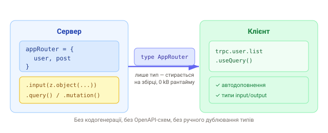

1. Проблема: типи живуть двічі
Коли фронтенд і бекенд спілкуються через REST, тип відповіді описано двічі: раз на сервері (що ми віддаємо) і раз на клієнті (що ми очікуємо). Ці два описи ніщо не тримає в синхроні — змінили поле на бекенді, а на фронті воно ще старе, і TypeScript мовчить, бо через мережу типи «не переходять».
// бекенд повертає { id, title, done }
app.get('/api/todos', (req, res) => res.json(getTodos()));
// клієнт вгадує форму відповіді вручну — і легко помиляється
type Todo = { id: number; title: string; completed: boolean }; // ← поле насправді `done`
const todos: Todo[] = await fetch('/api/todos').then((r) => r.json());Класичні ліки — генерувати клієнт зі схеми (OpenAPI/Swagger, GraphQL codegen). Це працює, але додає крок кодогенерації, окремі схеми й тулінг.
2. Що таке tRPC
tRPC (TypeScript Remote Procedure Call) дає змогу викликати серверні функції з клієнта так, ніби вони локальні — і при цьому типи переходять автоматично, без жодної кодогенерації. Ти експортуєш із сервера лише тип головного роутера, а клієнт із нього виводить назви процедур, їхні аргументи й результати.
Ключова ідея:
сервер і клієнт — в одному TypeScript-проєкті (монорепо), тож клієнт
може імпортувати import type сервера. Це тип, а не код — на
збірці він стирається, у бандл нічого серверного не потрапляє.
3. Як це працює
tRPC не вигадує нову мову схем. Вхідні дані валідуються Zod-схемою (той
самий Zod, що й у формах), а типи результату виводяться з самих функцій. Один тип
AppRouter зв'язує обидві сторони.

4. Коли доречно, а коли ні
- Ідеально: ти пишеш і фронт, і бек на TypeScript в одному репозиторії (Next.js, монорепо) і хочеш end-to-end типобезпеку без зусиль.
- Не про це: публічний API для сторонніх клієнтів (мобілки на іншій мові, партнери) — там потрібен стабільний контракт: REST або GraphQL.
tRPC vs GraphQL. GraphQL — мовно-нейтральний протокол зі своєю схемою (SDL), чудовий для великих публічних API й різних клієнтів. tRPC не має окремої схеми й працює тільки в TypeScript, зате нульова кодогенерація та миттєве автодоповнення. Для внутрішнього TS-фулстеку tRPC зазвичай простіший.
5. Що входить у стек
@trpc/server— опис роутерів і процедур на бекенді;@trpc/client— типізований клієнт;-
@trpc/react-query— інтеграція з TanStack Query (хукиuseQuery/useMutation); zod— валідація входів.
Далі в розділі складемо цей конвеєр по кроках: сервер → процедури → роутер і контекст → клієнт із React Query → middleware й захищені процедури.